Spiderverse |
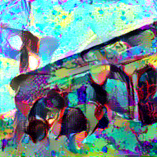
Campanile - UC Berkeley |
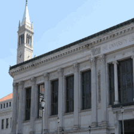
(\(\omega = 0.0006\)) |
What exactly is style? Artists have been separated by the era and movement under which they painted, but it can be hard to qualify concretely what exactly contributes to stylistic differences. Interpretations of artwork may discuss "broad brush strokes" or "detailed attention to light and reflection" but these are only components that make up style, rather than being style itself. So what really is style in the first place? Well, according to Gatys, it's this:
$$\sum_{l=0}^{L}w_lE_l$$
... To be honest at first glance, this doesn't really do anything to clear up the question, but we'll see how this simple equation lets us "compute" style as a number, which is a very exciting prospect.
This project is completely rooted in the paper A Neural Algorithm of Artistic Style (which will henceforth be referred to just as the Gatys paper), and the algorithm this paper documents is incredibly cool. I won't analyze the paper here both because doing so would be beyond my level of expertise, and also because there is a wonderful analysis and implementation guide that was written by Faris Nolan which I followed pretty religiously. It does a phenomenal job giving an intuitive and precise walk-through of the paper and the algorithm therein. It is important however, to understand the basic idea behind this paper so here goes. According to Gatys, images are composed of disunited notions of content and style. Content is relatively easy to explain; is the image of a bird, a house, or an airplane? Style on the other hand is a bit more tricky to describe, as we've seen above. Regardless both content and style are subject to patterns, for instance all airplanes have wings, all houses have roofs, most Picasso works tend to have strong lines and bold colors, and most Monet works have light brush strokes. Gatys recognizes that convolutional neural networks (CNNs) are capable of super-accurate object recognition in part due to their ability to recognize patterned elements in an image, thus he suggests using neural nets to grab both patterns in content, as well as patterns in style. If our neural net could hypothetically bisect style patterns and content patterns, then it should be possible to link these elements arbitrarily as well, in other words, render any content, in any style.
I don't have the time, money, or compute power to develop and train my own convolutional neural net at the moment, so it's lucky that none of this is required by the Gatys paper.
However, we will have to set up our neural net first according to the steps that Gatys lays out. His suggestion is to capitalize on the pre-trained VGG-19 network, and since
we aren't identifying objects, we can eschew the FC layers. To extricate content patterns, Gatys says we can just grab the feature map at convolutional layer 4_2, which is simple, but
for style patterns, Gatys suggests grabbing feature maps from convolutional layers 1_1, 2_1, 3_1, 4_1, and 5_1. Since I'm relatively new to PyTorch, my first instinct was to just make
6 neural networks, and each one would grab the feature map at the specified layer, but even being as new to ML as I was, this already seemed like a terrible idea. Luckily, while
watching Jeremy Howard's amazing lecture on this paper, I learned about forward
hooks in PyTorch, which basically saved me from needing to create a network 6 times. Instead, I just had one network with every convolutional layer in VGG-19, and 6 forward hooks
registered to pull the feature maps at all 6 layers aforementioned. Below you can see the complete architecture of the CNN elucidated.
Sequential(
(0): Conv2d(3, 64, kernel_size=(3, 3), stride=(1, 1), padding=(1, 1))
(1): ReLU(inplace=True)
(2): Conv2d(64, 64, kernel_size=(3, 3), stride=(1, 1), padding=(1, 1))
(3): ReLU(inplace=True)
(4): MaxPool2d(kernel_size=2, stride=2, padding=0, dilation=1, ceil_mode=False)
(5): Conv2d(64, 128, kernel_size=(3, 3), stride=(1, 1), padding=(1, 1))
(6): ReLU(inplace=True)
(7): Conv2d(128, 128, kernel_size=(3, 3), stride=(1, 1), padding=(1, 1))
(8): ReLU(inplace=True)
(9): MaxPool2d(kernel_size=2, stride=2, padding=0, dilation=1, ceil_mode=False)
(10): Conv2d(128, 256, kernel_size=(3, 3), stride=(1, 1), padding=(1, 1))
(11): ReLU(inplace=True)
(12): Conv2d(256, 256, kernel_size=(3, 3), stride=(1, 1), padding=(1, 1))
(13): ReLU(inplace=True)
(14): Conv2d(256, 256, kernel_size=(3, 3), stride=(1, 1), padding=(1, 1))
(15): ReLU(inplace=True)
(16): Conv2d(256, 256, kernel_size=(3, 3), stride=(1, 1), padding=(1, 1))
(17): ReLU(inplace=True)
(18): MaxPool2d(kernel_size=2, stride=2, padding=0, dilation=1, ceil_mode=False)
(19): Conv2d(256, 512, kernel_size=(3, 3), stride=(1, 1), padding=(1, 1))
(20): ReLU(inplace=True)
(21): Conv2d(512, 512, kernel_size=(3, 3), stride=(1, 1), padding=(1, 1))
(22): ReLU(inplace=True)
(23): Conv2d(512, 512, kernel_size=(3, 3), stride=(1, 1), padding=(1, 1))
(24): ReLU(inplace=True)
(25): Conv2d(512, 512, kernel_size=(3, 3), stride=(1, 1), padding=(1, 1))
(26): ReLU(inplace=True)
(27): MaxPool2d(kernel_size=2, stride=2, padding=0, dilation=1, ceil_mode=False)
(28): Conv2d(512, 512, kernel_size=(3, 3), stride=(1, 1), padding=(1, 1))
(29): ReLU(inplace=True)
(30): Conv2d(512, 512, kernel_size=(3, 3), stride=(1, 1), padding=(1, 1))
(31): ReLU(inplace=True)
(32): Conv2d(512, 512, kernel_size=(3, 3), stride=(1, 1), padding=(1, 1))
(33): ReLU(inplace=True)
(34): Conv2d(512, 512, kernel_size=(3, 3), stride=(1, 1), padding=(1, 1))
(35): ReLU(inplace=True)
(36): MaxPool2d(kernel_size=2, stride=2, padding=0, dilation=1, ceil_mode=False)
)
It's nearly identical to the CNN Gatys delineates, except, I did not revert all MaxPool2d layers to AveragePool2d.
A very important aspect of this paper is finding a way to numerically represent deltas in content, and deltas in style. This is something we do on a day to day basis implicitly which is not nearly as intuitive for a computer to do. Since Gatys' idea was that content and style are disparate principles, we will be comparing style and content separately, and thus we need a way to quantify both content resemblance and style resemblance. For this, Gatys defines 2 corresponding loss functions, content loss, and style loss.
Content Loss:
Content loss is a bit easier. If I showed you two pictures of a penguin, you would say "yea, those are penguins", but if I showed you a picture of a truck and a bowl, you would (hopefully)
say, "no, those aren't penguins". If we have feature map 4_2, which basically has extracted the notion of "penguiness" from our penguin image, we can just compare
feature map 4_2 of any other image to our meta-penguin feature map to see if our other image is also a penguin. The more similar the penguin feature map is to the mystery image's feature map,
the more penguin-like the mystery image is. Gatys chooses half the sum of the squared neuron deltas at convolution layer 4_2 as his content loss function.
Style Loss:
Style Loss is a bit weirder. Normally we might consider having content loss and style loss basically use the same calculation, but there's an issue with that. Our goal was to recast our photo
in the style of a piece of artwork, but that doesn't mean we want to just overlay style elements onto our content image. We want the general essence of a piece of artwork, not the exact brush
strokes that were used to create it. Faris Nolan describes this concept as "spatial relevance", and it's pretty easy to understand in the context of an example. Below is Van Gogh's
Starry Night.
If you were to describe the style, you wouldn't say one yellow half moon 3.9 centimeters from the top right corner, or light blue and dark blue hooks in the center of the top half etc. Doing so would reduce you back to content! In other words, style is the essence of an artwork without "spatial relevance". So we need a loss function that doesn't care for what Gatys notes as "spatial extent", just the so-called "essence" of a piece of art. That's pretty vague, but here's what Gatys posits. Remember that we grab feature maps for style from 5 convolutional layers. Gatys says that at each layer, we'll take each feature map and flatten it to 1-dimension, and put these flattened feature maps into a matrix \(F\). This still doesn't throw out spatial relevance so what we do next is generate the gram matrix for the layer, the schematic for which is listed below: $$G_{ij} = \sum_k F_{ik}F_{jk}$$
Nolan's explanation really helped me rationalize this step so I've quoted her article below:
"Remember that every row of the matrix was an unrolled feature map.... By multiplying elements together, we are checking if these elements
overlap at their location in the image.... And this overlap or correlation between elements, regardless of their whereabouts, is exactly what style is." -Faris Nolan, Neural Algorithm of Artistic Style: A Modern Form of Creation
Granted a gram matrix still isn't a numerical loss, so this isn't quite enough, but we can consider what would happen if we created our gram matrix for each of the 5 convolutional layers that we grabbed both for some image like Starry Night and some other mystery image. Gatys again chooses the sum of the squared deltas between gram matrix entries (and scales this entire value). Precisely, here's the style loss for some arbitrary layer: $$\frac{1}{4N_l^2M_l^2}\sum_{i,j}(G_{ij}^l - A_{ij}^l)^2$$ In this formulation \(G\) is the gram matrix for Starry Night, \(A\) is the gram matrix for our mystery image, \(N\) is the number of rows in \(G\) and \(M\) is the number of columns. But again since we would theoretically have one loss value for each layer, instead we can linearly combine them as follows to find the complete pure-style loss \(L_s\): $$L_s = \sum_{l=0}^Lw_lE_l$$
Full Loss:
We're almost done now, the only problem is that we don't want 2 loss values, one for content and one for style, subsequently we'll need to generate the full loss, \(F_L\) instead. This functionality
is documented and encapsulated by compute_full_loss, and Gatys advocates for simple linear combination as follows: $$F_L = \alpha L_{content} + \beta L_{style}$$ Where
\(L_{content}\) is the pure content loss, and \(L_{style}\) is the pure style loss. In general for each of the examples below I'll also mark the value of \(\omega = \frac{\alpha}{\beta}\).
We can easily choose a content influence and a style influence, and from there Gatys says we should use a white noise image and using gradient descent with our Full Loss function defined above, we should be able to optimize our mystery white-noise image to be an image with the same content as our content influence, painted in the style of our style influence. A number of people suggested that using the content influence rather than a white-noise image made the renders look nicer, which I agree with, so that's what I followed instead.
Time for some artwork! Here are the hyperparameters I used: Learning Rate: 0.5; Epochs: 50; Steps per Epoch: 20; Optimizer: optim.LBFGS. As mentioned above I'll also
mark down the value of \(\omega\).
The content influence is the top left photo of Neckarfront, Germany. The style influences are superimposed in the bottom right corner, and clockwise, are The Shipwreck of the Minotaur by J.M.W. Turner, Der Schrei der Natur by Edvard Munch, and The Starry Night by Vincent Van Gogh. For all 3 style influences, \(\omega = 0.001\). Personally, I think watching short animations of how the art changes over the epochs is super cool, so I made some small animations below of the state of the image after each of the 50 epochs.
| 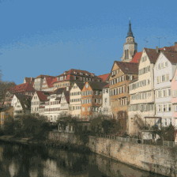 |
You can find Gatys' style transfer renders in his paper, and comparatively I was pretty happy with my results. I do see that the colors of my transfers are slightly less saturated,
but I do notice that in Gatys' style transfers, especially in the Starry Night transfer, you can see a really stark moment on the left of the transfer where the color suddenly desaturates.
My results don't have this (as they tend to be a bit lighter in totality). I wonder how much of this is due to MaxPool2d.... This desaturation was something others also noticed. You can
also see a bit of ghosting in my style transfers (notice the ghosting of people in my Der Schrei der Natur transfer).
In the examples below, the content influence is this wonderful picture of Doe Library and the Campanile here at UC Berkeley, taken by my talented photographer friend Yanay Rosen. I wanted to see how well this algorithm did with some styles from animated movies, so I chose some art from Sony Animation's Spiderman: Into the Spiderverse and Studio Ghibli. The style influence, resultant image, and short animation can be found below.
|
Spiderverse |
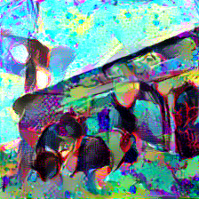
Campanile - UC Berkeley |
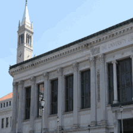
(\(\omega = 0.0006\)) |
|
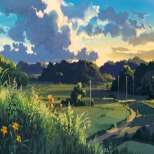
by Studio Ghibli |
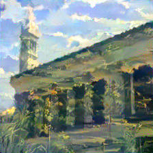
- UC Berkeley |
(\(\omega = 0.00083\)) |
Not all style influences are created equally though, and we'll discuss why this is the case later. For now, take a look at two images where the style transfer was less successful. The first content influence is a picture of Moses Hall Courtyard taken by UC Berkeley lecturer and alumnus Michael Ball, and the second content influence is a picture of Berkeley's West Lawn taken by Yanay Rosen.

- UC Berkeley |

|
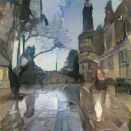
|

|
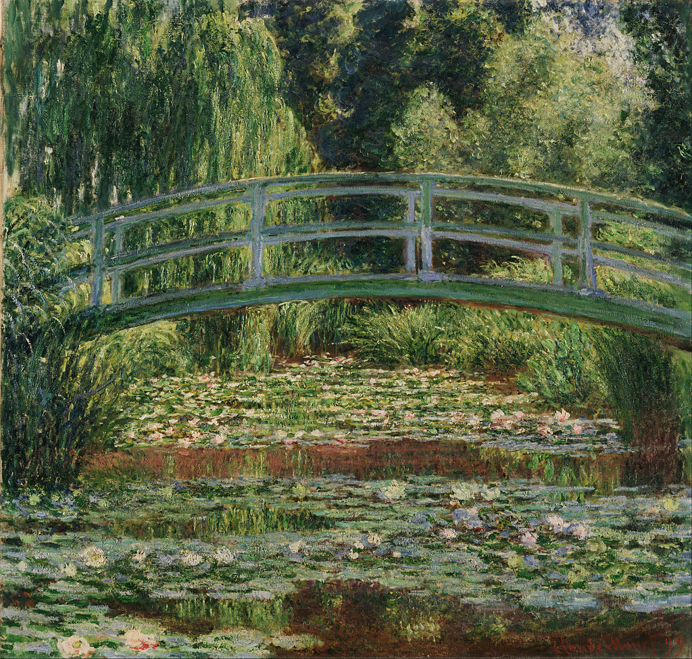
|
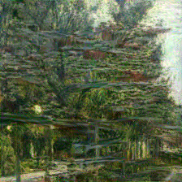
|
Clearly, style transfer doesn't really work for just any arbitrary aggregation of content and style influence, so let's think about why. The thing is, this algorithm doesn't really learn style. It isn't taking a bunch of Monet's paintings and analyzing their style somehow and coming up with some meta-decision for what Monet style paintings are. It's scrutinizing patterns it's seen before and applying them to another image. If we think about it this way, it makes sense why the algorithm doesn't perfectly render any style for any content influence, because all it knows about style is the one piece of artwork it's fed, and it tries to intelligently apply this pattern.
If the style is very unrealistic, like in the case of the Van Gogh painting, the fact that there are misapplied colors and strange half correct artifacts in the transfers doesn't seem particularly problematic, because the style influence is so strong, our brains just attribute any oddities to the style. But if the style is slightly more realistic, then any oddities suddenly seem like problems rather than style choices. Look at the Moses Hall Courtyard render for instance. Caillebotte's style is significantly less extrusive, and more realistic, and thus it doesn't sufficiently stylize the content influence to seem correct. Also note, that again it isn't learning style, it's learning patterns, thus if there are drastic differences in subject matter, we may see ghosting in the style transfer. For instance notice the ghosting in the Library x Ghibli transfer, where you can see grass on the side of Doe library, or the ghosting of people in Moses Hall Courtyard.
You may wonder, why isn't this an issue for the Van Gogh painting, or the Munch Painting. The reason is because, there isn't a super well defined subject in these pictures! Think about Starry Night. What exactly is the subject of this painting, and is it very distinct from the background style? Even in the The Shipwreck of The Minotaur, you might argue that the raft is the subject, but it takes up such a comparatively tiny part of the painting that this doesn't mess with the style pattern extrication.
So how can we make style transfers look less "wrong"? Well, we can either choose styles that are more aggressively unrealistic, or choose styles whose subject matter parallels the content influence a little closer. There isn't anything inherently hard to transfer about the Studio Ghibli art style, and notice here if we choose a different style influence and content influence whose subjects emulate one another, the style transfer looks great. Similarly, if I choose an artist whose style is far more conspicuous, as is the case with this piece by John Singer Sargent, the style transfers look better as well. The first content influence is titled Rolling Hills in Northern California, and the first style influence is artwork by Studio Ghibli. The second content influence is again UC Berkeley's West Lawn.
|
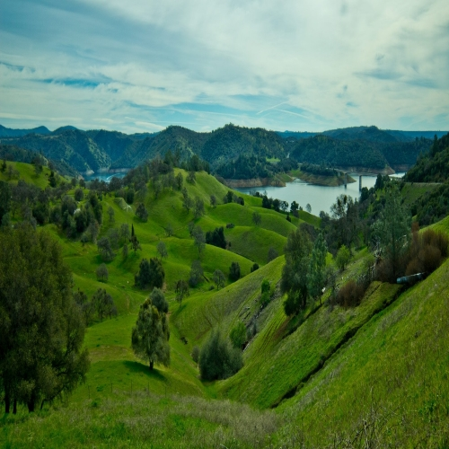
|
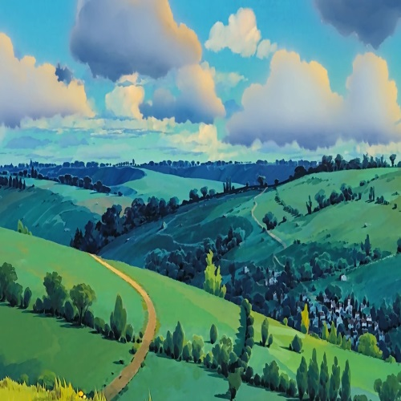
|
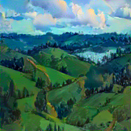
|
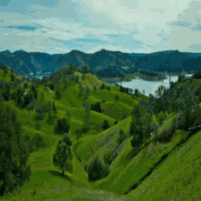
|
|
|
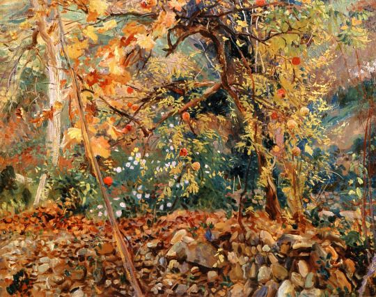
|
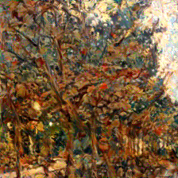
|
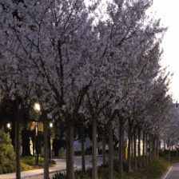
|